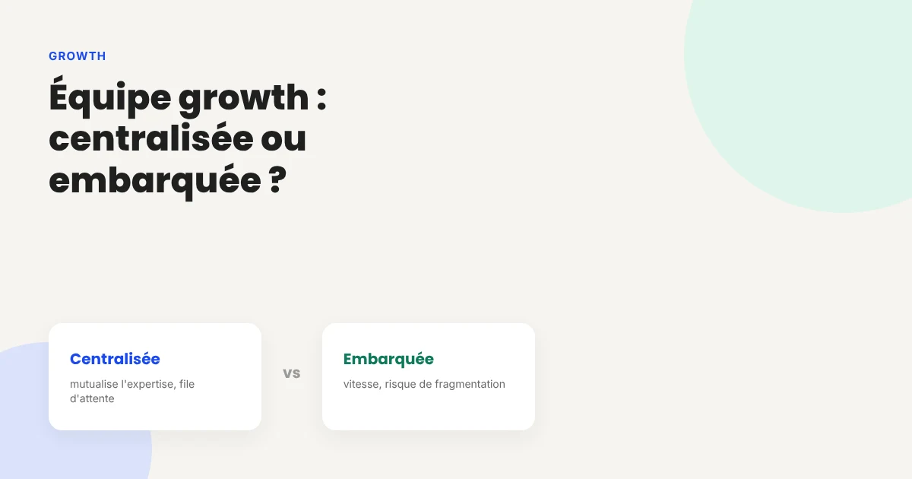

Équipe growth centralisée ou embarquée : ce que la structure change vraiment
Avant de choisir un framework d'expérimentation ou un outil d'analytics, il y a une décision plus structurante qui conditionne tout le reste : où se trouve l'équipe growth dans l'organigramme, et avec qui elle partage ses priorités au quotidien.

La plupart des articles sur le growth parlent de méthode : quelle métrique suivre, quel framework d'expérimentation adopter, comment prioriser un backlog de tests. Ils passent souvent sous silence une question plus en amont, et plus difficile à changer une fois tranchée : où se trouve l'équipe growth dans l'organisation, et de qui dépendent ses priorités. Ce choix structurel conditionne directement ce que l'équipe growth peut réellement faire, bien plus que n'importe quel outil ou process ajouté par-dessus.
Le modèle centralisé
Dans une structure centralisée, l'équipe growth est une entité transverse unique, qui intervient sur l'ensemble des produits ou segments de l'entreprise. Elle priorise ses projets selon un calcul d'impact global — quel test, sur quel produit, a le potentiel de revenu ou de rétention le plus élevé cette semaine — plutôt que selon la roadmap d'une seule équipe. L'avantage principal est la mutualisation : une seule équipe développe une expertise profonde en expérimentation, en tracking et en analyse statistique, qu'elle applique ensuite partout où l'impact est le plus fort. L'inconvénient qui revient le plus souvent dans les retours d'expérience de praticiens est la dépendance : chaque équipe produit qui veut tester quelque chose doit passer par l'équipe growth, ce qui crée une file d'attente et un goulot d'étranglement dès que plusieurs produits réclament son attention en même temps.
Le modèle embarqué (embedded)
Dans le modèle embarqué, chaque équipe produit intègre directement ses propres profils growth — souvent un product manager growth, un data analyst et un ou deux développeurs — qui travaillent exclusivement sur le périmètre de ce produit, au même rythme de sprint que le reste de l'équipe. L'avantage principal est la vitesse d'exécution : aucune file d'attente à gérer, l'équipe growth connaît le produit en profondeur et peut tester en continu sans dépendre d'une priorisation externe. L'inconvénient principal est la duplication et la fragmentation : chaque équipe réinvente ses propres méthodes de tracking et d'analyse, ce qui complique la comparaison d'impact entre produits et peut faire perdre des apprentissages qui auraient été utiles ailleurs dans l'entreprise.
Le modèle hybride, le plus fréquent en pratique
Dans les retours d'expérience de praticiens growth, le modèle qui revient le plus souvent une fois l'entreprise suffisamment grande n'est ni purement centralisé ni purement embarqué, mais un hybride : une petite équipe centrale définit les standards de mesure, maintient l'infrastructure de tracking commune et porte les projets transverses (ceux qui touchent plusieurs produits à la fois), tandis que des profils growth embarqués dans chaque équipe produit exécutent les tests spécifiques à leur périmètre en s'appuyant sur cette infrastructure partagée. Ce modèle demande davantage de coordination au démarrage, mais évite le goulot d'étranglement du modèle purement centralisé sans tomber dans la fragmentation totale du modèle purement embarqué.
Comment trancher selon la taille de l'organisation
En dessous d'une poignée de produits ou de segments distincts, le modèle embarqué n'a généralement pas assez de volume de travail pour justifier des rôles growth dédiés dans chaque équipe : une petite équipe centralisée, qui intervient partout selon l'impact, reste la structure la plus réaliste. Le basculement vers un modèle hybride ou embarqué se justifie quand le nombre de produits ou de segments devient suffisant pour que la file d'attente d'une équipe centrale unique commence à freiner concrètement la cadence de test de chaque produit — un signal plus fiable pour trancher que n'importe quel seuil arbitraire d'effectif.
FAQ
Qu'est-ce qu'une équipe growth centralisée ?
Une équipe growth centralisée regroupe les compétences d'acquisition, d'activation et de rétention dans une seule équipe transverse, qui intervient sur l'ensemble des produits ou segments de l'entreprise plutôt que d'être rattachée à un seul d'entre eux. Elle priorise ses projets selon un calcul d'impact global, pas selon la roadmap d'une seule équipe produit.
Qu'est-ce qu'une équipe growth embarquée (embedded) ?
Dans le modèle embarqué, chaque équipe produit intègre directement ses propres profils growth (souvent un PM growth, un data analyst et un ou deux développeurs), qui travaillent exclusivement sur le périmètre de ce produit, avec le même rythme de sprint que le reste de l'équipe.
Quel modèle choisir quand l'entreprise est encore petite ?
En dessous d'une poignée de produits ou de segments distincts, le modèle embarqué n'a généralement pas assez de volume pour justifier des rôles dédiés dans chaque équipe : une petite équipe centralisée, qui intervient partout, reste la structure la plus réaliste jusqu'à ce que la taille et le nombre de produits imposent une répartition.
Une structure growth à repenser pour débloquer la cadence de test ?
Pour aller plus loin, voir l'article North Star Metric : la métrique unique qui peut aussi vous égarer, et growth loops vs funnel marketing.
Pour continuer sur ce sujet.